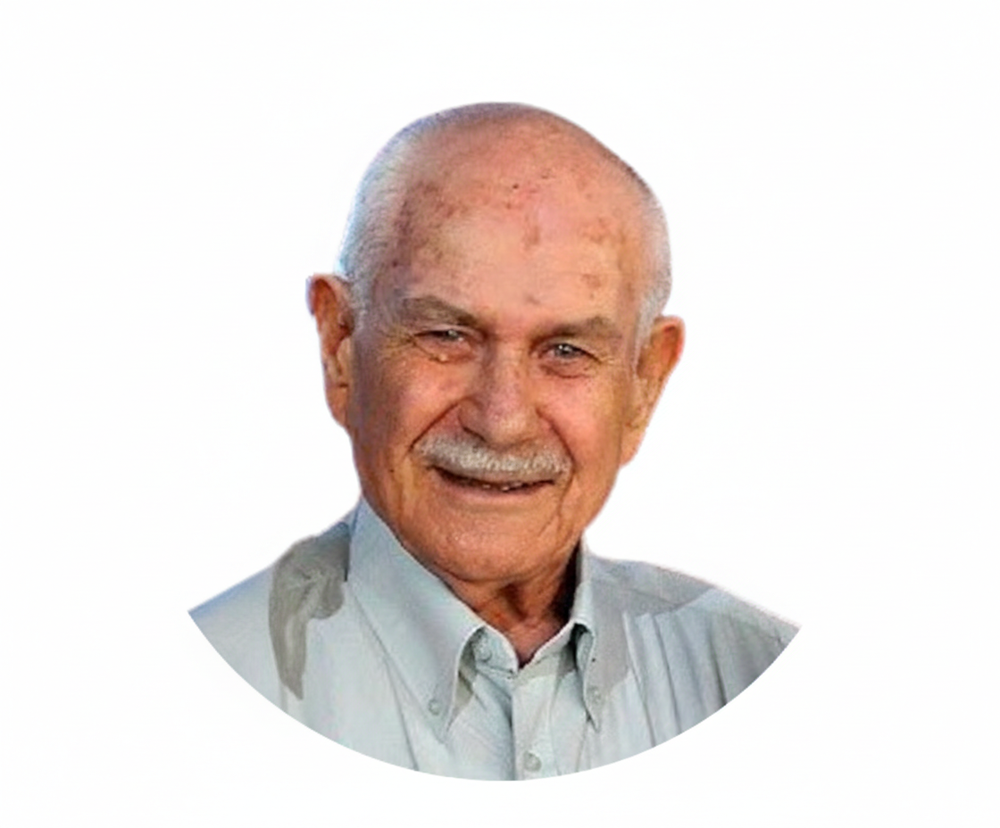

אפרים רוטמן ז"ל
1935 – 2019
"זכרו חקוק בלבנו לעד"

1935 – 2019
"זכרו חקוק בלבנו לעד"
אפרים רוטמן ז"ל, איש של עקרונות ושל חום, הקדיש את חייו למשפחתו ולסובבים אותו.
סיפורו של אפרים הוא סיפור של דור שלם - דור של בוני הארץ, של עבודה קשה ושל ערכים שלא נס ליחם. הוא ידע למצוא את הטוב בכל אדם ואת היופי בכל רגע פשוט.
נולד בימים של הקמת היישוב, גדל על ברכי הציונות ואהבת האדם.
תקופה משמעותית של בנייה ועשייה, דור של בוני הארץ.
היה סבא מסור שתמיד מצא זמן לסיפור ועצה טובה. אהבתו לספר ליוותה אותו תמיד.
השלמת מסע חיים מלא בתוכן, אהבה ומורשת שתלווה אותנו לנצח.
הדליקו נר והקדישו מילה לזכר נשמתו של אפרים
יהי זכרו ברוך
מוזמנים לכתוב מילה לזכרו של אפרים לפני הדלקת הנר